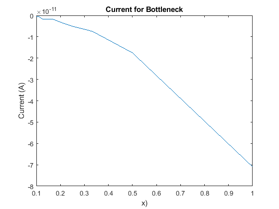

Length=150;
Width=(2/3)*Length;
I = zeros(1,10);
sigmaMap = zeros(Length,Width);
for bottleneck =1:10
bottle=bottleneck;
G=sparse(Length*Width,Length*Width);
F=zeros(Length*Width,1);
sigOut= 1;
sigIn= 1e-2;
midX = Length/2;
midY = Width/2;
boxW = Width*2/3;
spaceW = Width - boxW;
boxL = Length/4;
boxW = spaceW/bottle;
leftBC = midX - boxL/2;
rightBC = midX + boxL/2;
topBC = midY + boxW/2;
bottomBC = midY - boxW/2;
for x=1:Length
for y=1:Width
n=y+(x-1)*Width;
nxm = y+(x-2)*Width;
nxp = y+(x)*Width;
nym = (y-1)+(x-1)*Width;
nyp = (y+1)+(x-1)*Width;
if x == 1
G(n,n) = 1;
F(n) = 1;
sigmaMap(x,y) = sigOut;
elseif x == Length
G(n,n) = 1;
F(n) = 0;
sigmaMap(x,y) = sigOut;
elseif (y == Width)
G(n,n) = -3;
if(x>leftBC && x<rightBC)
G(n,nxm) = sigIn;
G(n,nxp) = sigIn;
G(n,nym) = sigIn;
sigmaMap(x,y) = sigIn;
else
G(n,nxm) = sigOut;
G(n,nxp) = sigOut;
G(n,nym) = sigOut;
sigmaMap(x,y) = sigOut;
end
elseif (y == 1)
G(n,n) = -3;
if(x>leftBC && x<rightBC)
G(n,nxm) = sigIn;
G(n,nxp) = sigIn;
G(n,nyp) = sigIn;
sigmaMap(x,y) = sigIn;
else
G(n,nxm) = sigOut;
G(n,nxp) = sigOut;
G(n,nyp) = sigOut;
sigmaMap(x,y) = sigOut;
end
else
G(n,n) = -4;
if( (y>topBC || y<bottomBC) && x>leftBC && x<rightBC)
G(n,nxp) = sigIn;
G(n,nxm) = sigIn;
G(n,nyp) = sigIn;
G(n,nym) = sigIn;
sigmaMap(x,y) = sigIn;
else
G(n,nxp) = sigOut;
G(n,nxm) = sigOut;
G(n,nyp) = sigOut;
G(n,nym) = sigOut;
sigmaMap(x,y) = sigOut;
end
end
end
end
SolV = G\F;
SolVmatrix=zeros(Length,Width);
for x=1:Length
for y=1:Width
n=y+(x-1)*Width;
SolVmatrix(x,y)= SolV(n);
end
end
[Ey,Ex] = gradient(SolVmatrix);
E = gradient(SolVmatrix);
J = sigmaMap.* E;
area = Length*Width;
I(bottleneck)= (sum(sum(J))/(Length*Width))/area;
end
x = 1./linspace(1,10,10);
figure(1)
plot(x,I);
title('Current for Bottleneck')
xlabel('x)')
ylabel('Current (A)')
